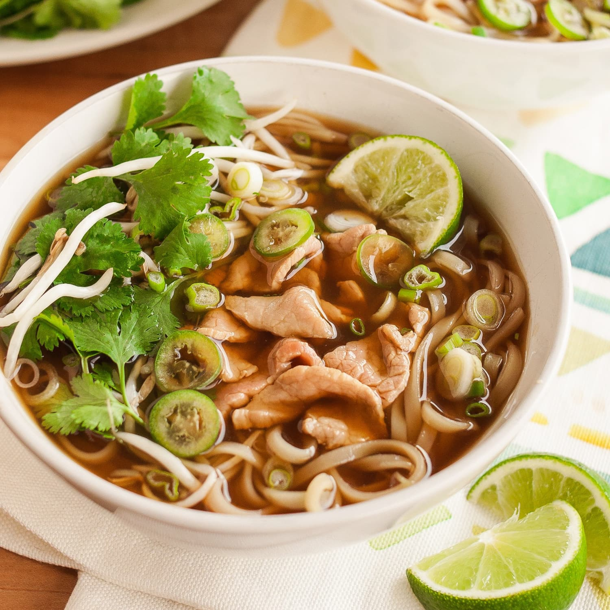

Pho Soup!

A nice savory vietnamese noodle soup!
Enjoy this vietnamese soup everyone has tried before! Salty, savory, and delicious!
Ingredients
- Cinnamon Sticks
- Onion
- Star Anise
- Coriander
- Ginger
- Sugar
- Salt
- Fish Sauce
- Beef or Pork Bones
Steps
- Bring water to a boil in large pot
- Parboil bones for 5 minutes for the initial impurities to seep out
- Drain pot and rinse bones to make sure all impurities are removed
- Bring new pot of water to a boil
- While waiting for water to boil, toast first 5 aromatic Ingredients to bring out aromatic flavors, slightly charring onion and ginger
- Carefully throw bones back in, along with toasted aromatics and lower to a simmer
- Simmer for at minimum 2 hours for best flavor
- Adjust with Salt, Sugar, and Fish sauce as needed - for saltiness, sweetness, and umami
- When ready, serve with fresh cooked noodles, veggies, and meats of your choice